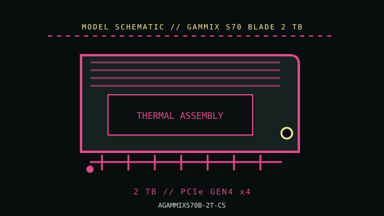

[ PCIE 4.0 NVME DRIVES // IDENTIFIED PRODUCT ]
ADATA XPG GAMMIX S70 BLADE 2 TB (AGAMMIXS70B-2T-CS)
2 TB M.2 2280 PCIe 4.0 x4 NVMe drive, cataloged by the retail MPN. The BLADE is a distinct thin-profile S70 variant; its passive graphene heat spreader is not equivalent to a motherboard heatsink. Performance values are manufacturer-rated maxima, not independent test results.

IDENTIFICATION: Verify the complete MPN, regional suffix, serial/date code and firmware from the drive label. Capacity variants, hardware revisions and cooling bundles can differ; the specifications below are for GAMMIX S70 BLADE 2 TB where the cited manufacturer documentation identifies them.
Manufacturer-identified specifications
| Product / MPN | ADATA XPG GAMMIX S70 BLADE 2 TB (AGAMMIXS70B-2T-CS); manufacturer code AGAMMIXS70B-2T-CS. |
|---|---|
| Capacity / form factor | 2 TB; M.2 2280 (22 × 80 mm), single module. Confirm sidedness and surrounding component clearance from the exact revision. |
| Interface / lane width | PCIe 4.0 x4 NVMe; link speed is host-negotiated and can be lower on older hardware. |
| Protocol / flash | NVMe over PCI Express; manufacturer identifies this product as a client M.2 SSD. Use the exact product document for protocol revision, NAND and any DRAM/HMB details. |
| Rated sequential performance | up to 7,400 MB/s read and 6,800 MB/s write. Ratings depend on capacity, firmware, workload and the test conditions published by the manufacturer. |
| Endurance / warranty | Use the current capacity-specific XPG datasheet and the drive label to confirm TBW and warranty limits; silicon/firmware revisions can differ. |
| Model generation / thermal package | 2021 product generation. M.2 2280 module with low-profile heat-spreader sheet; check package and exact revision before planning laptop or console fit. |
Compatibility, installation & service
- Confirm M.2 2280 support and PCIe x4 lane allocation. The bundled thin spreader and a motherboard thermal pad may compete for contact or height; follow the board and drive instructions rather than stacking thermal materials blindly. Check the exact controller/firmware revision and XPG endurance/warranty terms before sustained-write deployment.
- Read the motherboard or laptop service manual to check socket keying, supported protocol, PCIe generation/lane count, shared SATA/PCIe lanes, BIOS boot support, standoff position, module sidedness and cover clearance. M.2 is a form factor, not proof that a socket supports NVMe.
- Back up data and retain recovery media and encryption keys before replacement or firmware service. Use only the manufacturer utility/firmware intended for the exact model and capacity; confirm power and system stability during updates.
- Follow the host’s service procedure, shut down and disconnect standby power when instructed, and use electrostatic-discharge precautions. Do not hot-plug a client M.2 SSD unless the platform manual explicitly supports it.
- Monitor SMART health and temperature during sustained transfers. High burst benchmarks do not predict sustained writes, thermals, or service life; keep independent backups regardless of the TBW rating.
Sources & further reading
- XPG GAMMIX S70 BLADE — official product specificationsXPG lists the model family and its 2 TB performance ratings; use its datasheet for fit and revision-dependent fine print.
- ADATA / XPG GAMMIX S70 BLADE — manufacturer datasheetTechnical reference for the listed model or the NVMe storage interface; confirm current revision and regional SKU notes with the manufacturer before service.
Rated figures are not guarantees of sustained throughput in every host. Check the current manufacturer datasheet, installation guidance and warranty terms before deployment.